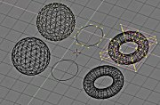

Основы редактирования
Объекты и режим редактирования
{kind=link}
Увеличенное изображение - по левой кнопке мыши.
При работе на уровне Объектов нельзя изменить такие их параметры, как число граней, также нельзя передвинуть отдельные вершины Объекта. Для того чтобы сделать это, необходимо войти в режим редактирования по клавише табуляции TAB.
В режиме редактирования становится доступен определенный блок ObData активного Объекта (Каркас, Кривая, или Поверхность). Вы теперь можете работать с новым набором инструментов: добавлять вершины и грани, вытягивать полигоны, рисовать кривые или задавать цвета отдельным граням.
В режиме редактирования Вы не можете добавлять новые Объекты или делать другие Объекты активными. Для этого необходимо сначала покинуть режим редактирования по клавише TAB.
При переходе в режим редактирования Blender делает копию выделенных данных. По горячей клавише "U" Вы можете вернуться к исходным данным. Это служит подобием функции Откатки (Undo).
Для Вашего удобства в режиме редактирования курсор меняет форму и становится крестообразным.